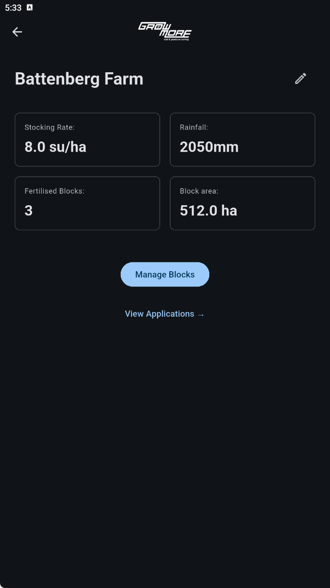
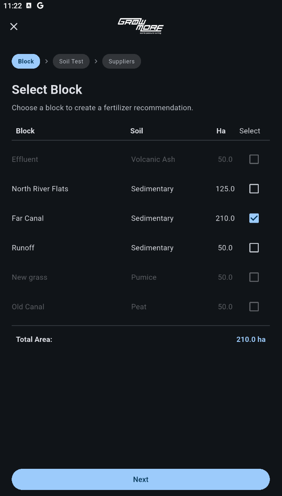
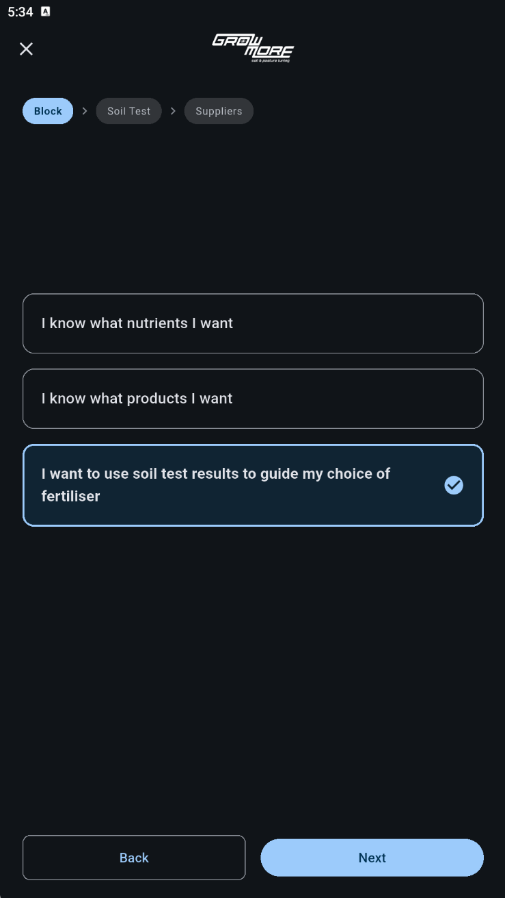
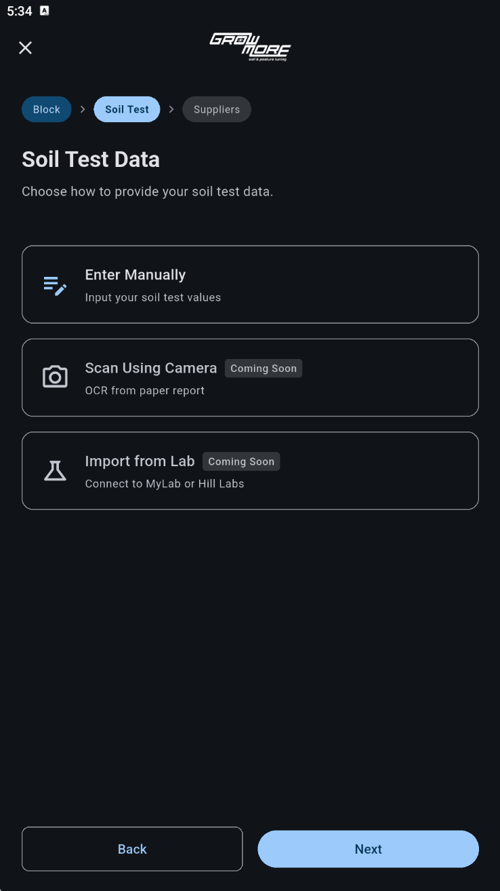
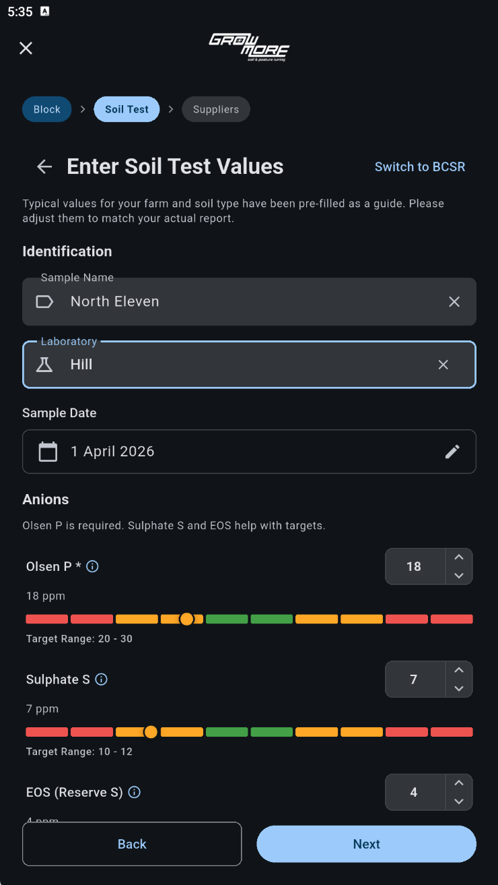
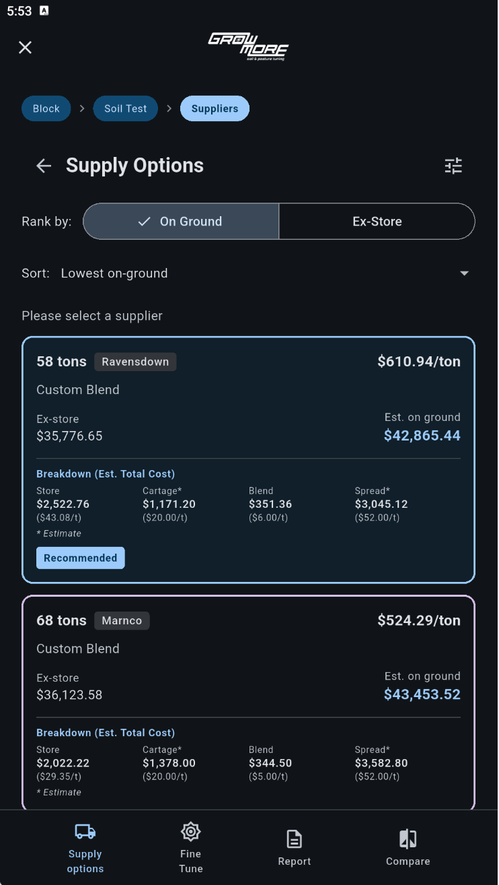
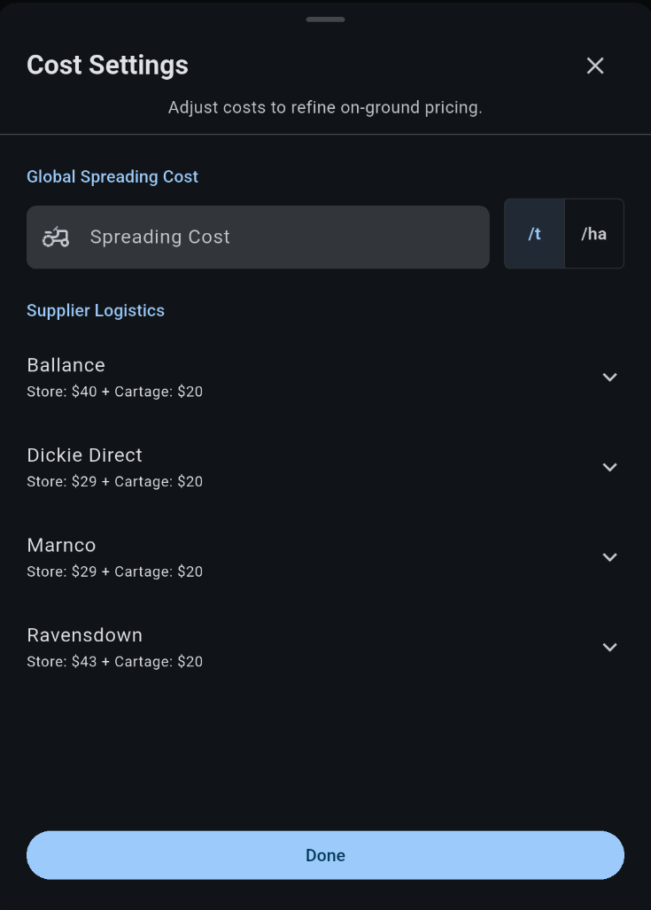
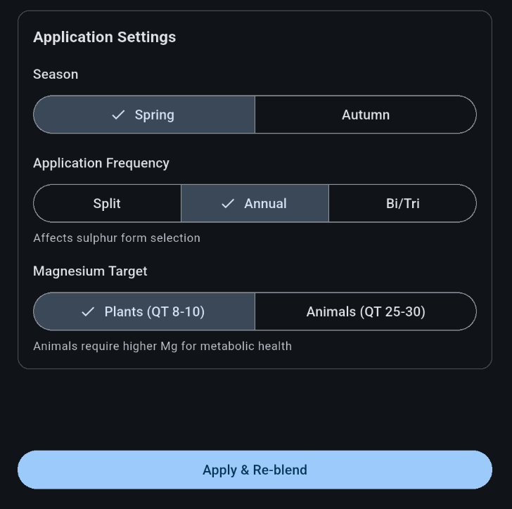
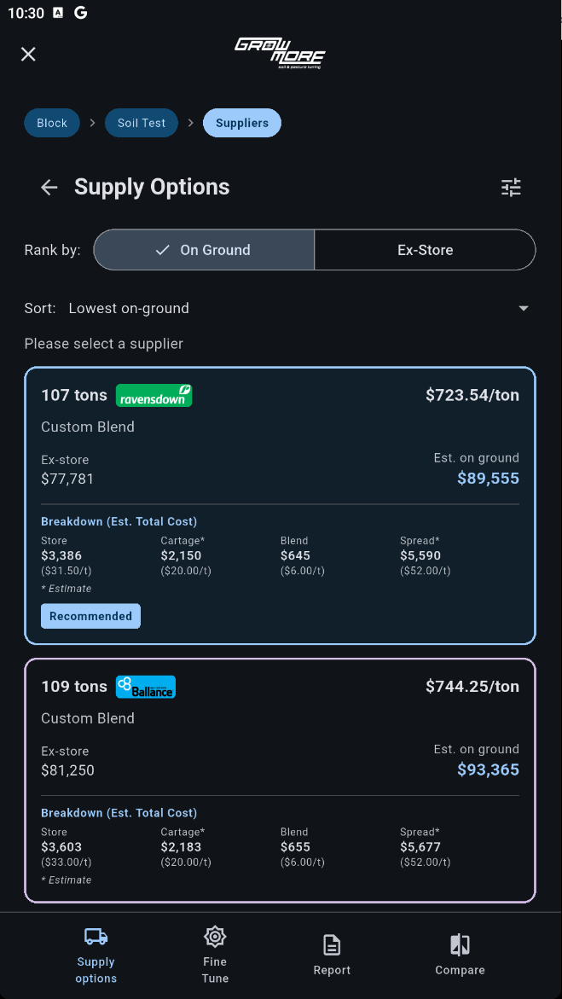

From soil test to fertiliser plan in a structured workflow.

Define stocking rate, rainfall, and block structure. This sets the context for all nutrient calculations.

Choose the block to plan for. Each block carries its own soil type and area, allowing accurate targeting.

Work from known nutrients, known products, or use soil test results to guide fertiliser selection.

Input soil test values manually or connect lab data. These values drive nutrient requirements.

See how your soil compares to target ranges and adjust values to match your actual test results.

Generate fertiliser blends across suppliers and rank them by total cost. Compare options side by side.

Understand total cost including product, cartage, blending, and spreading. See true on-ground pricing.

Update spreading costs and supplier logistics to reflect your actual situation. Pricing updates instantly.

Choose season, frequency, and nutrient targets. Recommendations adjust to match your system.

Apply changes and instantly generate updated fertiliser plans. Test different scenarios and see cost impact immediately.
No spreadsheets. No switching between suppliers. One system to plan, compare, and move toward ordering.